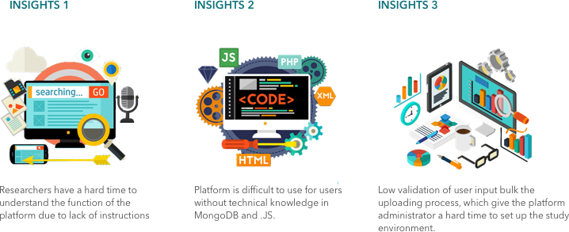
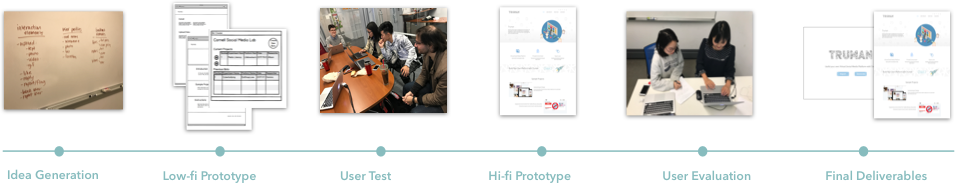
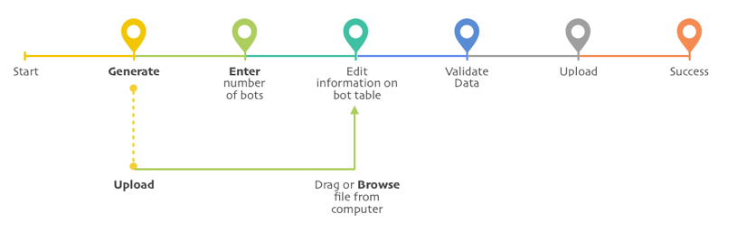
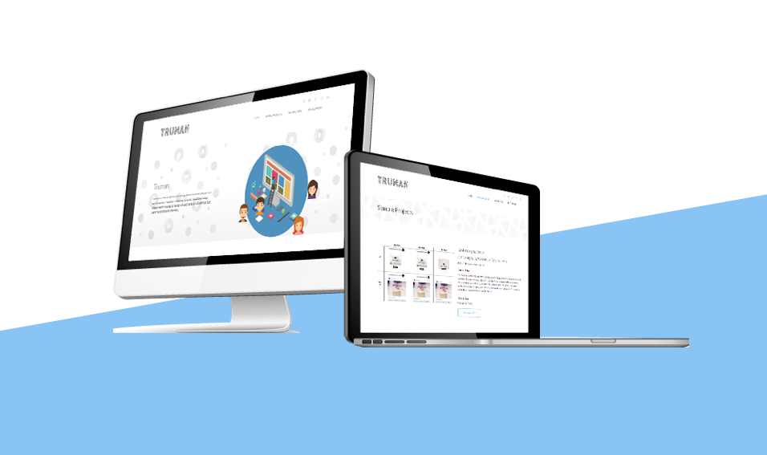

TRUMAN
Virtual Social Media Research Platform
ABOUT
Today technology has made it easy for people to access information and create media, and human are exposed to a huge amount of information from a variety of sources. Social media step under the spotlight of the sociology study. In order to provide a mainpulatable social media, our clients created a research platform called Truman. It could create a virtual social media platform where participants in social psychology related research studies can interact with each other or with artificial “robots” users in a controlled environment. This platform enables researcher to customized the social media environment and modified robot’s behaviors.
The goal of this project is to adapt this platform so that it can be used by any sociology researcher without technical skills to run their own research studies.
USER INTERVIEW AND REQUIREMENT GATHERING
During the background research, I found the problem not only exists among the user, but also happen at the platform administrator side. Many data from the researchers are unnormalized. Because of these data error, the administrator had to go back and forth between the raw datasheet and MongoDB database.
We spent the first 3 weeks on interviewing with communication and soicalology scholars to understand how they interacted with the previous iteration. By analyzing and synthesizing the data we gathered, we come up with 3 insights. These insights lead us to the problem we needs to target on.
Based on the found I mentioned above, I decide to justify my target audience to the administrator and the user. During the design process, I keep to think from both of them's perspective.
APPROACH
Based on the insights, my team got together to brainstorm solutions for the existing problems. After the initial idea generation, we started the iterative design phase. We used balsamiq to created a interactive prototype and tested it with the users. Based on the user feedback, we use sketch created a hi-fi prototype. After an other round of user evaluation, we modified our design and came up with the final prototype. During the design process, I met with our clients every two weeks to present our progress and gathering their advices and feedbacks.
OUTCOME
Data Uploading Wizard
The data uploading wizard provides a user friendly interface for the researchers to upload bots data into the platform database. It supports auto-generating bots identity, as well as importing local spreadsheets, which makes the uploading process concise and tidy. This desktop application allow researches without any coding background able to modified the platform. During the uploading process, the data wizard will help the platform administrator normalize the data.

Documentation Website
After organizing and analyzing the information gathered, we create a documentation website with detailed instructions for researchers. It also includes development documentation for developers to create new platform based on the Truman. Our client could promote the platform with this website. It also provided instructions for researchers to help them get familiar with the platform.
KEY IMPROVEMENT
{kind=link}
Easy to Understand
The documentation website provides detailed instructions and background information about Truman. New users don’t need to go over endless meetings and searching to learn about the platform.
{kind=link}
Easy to Use
T he users could adapt the platform without any coding! The data uploading wizard is able to generate large amounts of bots, includes bots’ username, ID, profile photo and other schema. User could modify every element in the app. They could also download the bot list to their own device.
{kind=link}
Easy to Manage
T he new version help the administrator manage the platform in the easy way. It helps valid the data before uploading them into MongoDB to decrease the cost of data uploading.